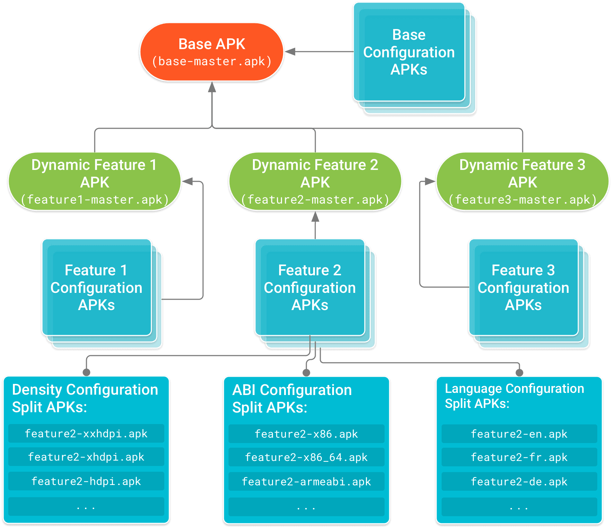
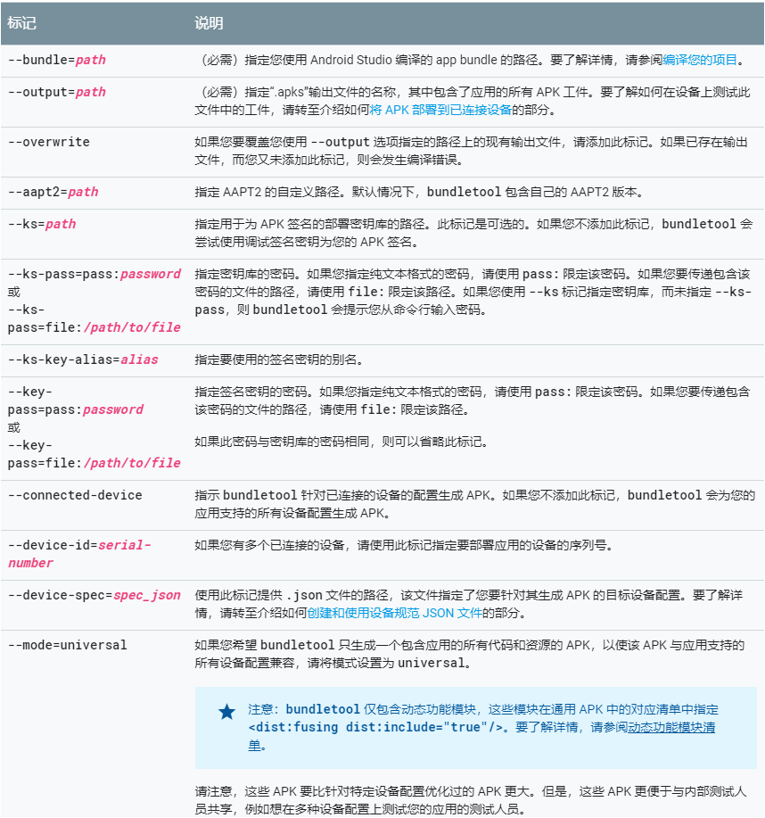

概述
一个APK实际上就是一个压缩文件，解压后可以看到通常包含如下几种类型的文件或文件夹：
- classes.dex源码；
- 编译生成的二进制资源文件resources.arsc；
- res资源文件夹；
- assets文件夹；
- lib库文件夹；
- AndroidManifest.xml清单文件；
- 依赖关系配置文件project.properties；
- 代码混淆配置文件proguard.cfg；
- 签名信息文件META-INF等。
除了AndroidManifest.xml、proguard.cfg、project.properties、META-INF这些本身很小没有必要做进一步压缩的文件外，其它文件或者文件夹都可以进一步优化，从而减小APK的体积。
classes.dex源码
- 代码混淆可以减小该文件的大小，因为混淆后的代码将较长的文件名、实例、变量、方法名等等做了简化，从而实现字节长度上的优化，但代码混淆会存在一些问题，比如比较耗时间，因为需要找到不能做混淆的代码并在配置文件中注明，其次是调试起来不太方便；
- 删掉没有用到的代码，可以借助Android Studio→Inspect Code…对工程做静态代码检查，删掉无用的代码；
- 尝试去除Android Support库等系统库；
- 重复引用依赖；
- 支持插件化：动态加载代码和动态加载资源；
- Facebook的redex优化字节码（谨慎使用）；
- 使用compileOnly配置依赖；
- 减少java隐藏开销，比如一些自动生成的函数等（如enum）；
resources.arsc
这个文件主要涉及到资源的ID这些，优化的空间不大，可以借助Android Studio→Inspect Code…删掉不必要的资源ID；
res资源文件夹
这是APK瘦身过程中优化的大头，一个APK里面最占用空间的就是多媒体资源，图片、音频、视频主要放在res和assets文件夹下；
- 通过Android Studio→Inspect Code…对工程做静态代码检查，删掉没有用到的资源；也可以在gradle中配置（谨慎）：
1
2
3
4
5
6
7android {
buildTypes {
release {
shrinkResources true
}
}
} - 一个APK尽量只用一套图片，从内存占用和适配的角度考虑，这一套图建议取720p的资源，放到xhdpi目录下；
- 使用tinypng等图片压缩工具对图片进行压缩；
- 使用不带alpha值的jpg图片以及同等质量下文件更小的webP图片格式(WebP 在 Android 端，最低只支持 4.0)；可以考虑使用 Drawable XML 来代替 PNG，如：渐变的背景图；用 Color 代替 PNG，如：纯色的背景；从性能上看，比起使用图片资源需要先将其生成 Bitmap 再传到底层交由 GPU 渲染，用 Drawable XML 和 Color 则更加高效，它是直接将 Shape 信息传到底层由 GPU 进行渲染，CPU 和 内存的占用会更少；优先使用9图；
- 有损编码格式的音频文件代替无损格式的音频文件
- 无损格式：WAV，PCM，ALS，ALAC，TAK，FLAC，APE，WavPack(WV)
- 有损格式：MP3，AAC，WMA，Ogg Vorbis
- 借助微信提供的资源文件混淆工具对资源文件做混淆，进一步压缩资源文件所占用的空间（支持7z压缩资源）；
- 用一张图片实现按钮按下和普通效果的样式，使用selector做遮罩，原图做background
- 有些第三库里引用了一些大图但是实际上并不会被用到，就可以考虑用1x1的透明图片覆盖（删除怕出错）。
- 使用矢量图：矢量图是由点与线组成，和位图不一样，它再放大也能保持清晰度，而且使用矢量图比位图设计方案能节约30～40%的空间，现在谷歌一直在强调扁平化方式，矢量图可很好的契合该设计理念。
- 优势：(1)占用存储空间小(2) 无极拉伸不会出现锯齿，可以照顾不同尺寸的机型(3)Android Studio自带很多资源，减小UI工作量。
- 劣势：(1) 只支持5.0及以上系统(2) 与位图相比多了一层计算，需消耗更多性能(3) 不支持.9图(4)不适合表现真实照片和复杂图形，一般使用在简单的icon和动画上。
assets文件夹
assets文件夹相比于res文件夹，还有可能放字体文件、预置数据和web页面等
使用字体压缩工具对字体文件进行压缩；
如果有web页面，可以考虑使用7zip压缩工具对该文件夹进行压缩，在正式使用的时候解压；
尽量不要在APK中打包预置数据，做到程序和数据分离，如果是不得不，可以考虑用7zip压缩工具对该文件进行压缩，在程序运行时解压；
将大资源文件放到服务端，启动后自动下载使用
删除无用的语言资源：大部分应用其实并不需要支持几十种语言的国际化支持，比如国内应用只支持中文：
1
2
3
4
5android {
defaultConfig {
resConfigs "zh"
}
}
lib库文件夹
- 动态加载so库
- 只提供对主流架构的支持，比如arm，对于mips和x86架构可以考虑不支持，这样可以大大减小APK的体积；
- 删除armeabi-v7包下的so：基本上armeabi的so也是兼容armeabi-v7的，armeabi-v7a的库会对图形渲染方面有很大的改进，如果没有这方面的要求，可以精简。
- 这里不排除有极少数设备会Crash，可能和不同的so有一定的关系，请大家务必测试周全后再发布。
在模块的build.gradle的defaultConfig下加入以下ndk配置：
1 | android { |
- moduleName是随便写的，与在Java类中使用System.loadLobrary(“本地库名称”)以及生成的.so文件名称对应；
- ldLibs是要用到的jni库，一般由google提供，比如上边引入的log库可以让我们在C代码中使用LogCat日志；
- abiFilters指的是我们要生成哪些平台的so文件。
工具
- 图片压缩神器tinypng
- 图片格式转换工具iSparta
- Android Studio→Inspect Code
- Android应用增量更新开源项目
- Android资源混淆工具
- 主流开源项目的混淆规则列表
- 字体资源文件压缩神器FontZip
- 统计APK文件中class、method、field、string数量
- AndroidUn7zip解压库
Android App Bundle
概述
详细文章参考官网: Android App Bundles
Android App Bundle是Google推出的Apk动态打包，动态组件化的技术，与Instant App不同，AAB是借助Split Apk完成动态加载，使用AAB动态下发方式，可以大幅度减少应用体积。只须在 Android Studio 中构建一个应用 (app bundle)，就可以将应用所需的全部内容 (适用于所有设备) 都涵盖在内：所有语言、所有设备屏幕大小、所有硬件架构。它本身并不支持动态化，只是动态化的一个载体文件，真正实现逻辑并不是它。
Split APK是Google为解决65536上限，以及APK安装包越来越大等问题，在Android L中引入的机制。它可以将一个庞大的APK，按屏幕密度，ABI等形式拆分成多个独立的APK，在应用程序更新时，不必下载整个APK，只需单独下载某个模块即可安装更新。Split APK将原来一个APK中多个模块共享同一份资源的模型分离成多个APK使用各自的资源，并且可以继承Base APK中的资源，多个APK有相同的data，cache目录，多个dex文件，相同的进程，在Settings.apk中只显示一个APK，并且使用相同的包名。
Dynamic Delivery
只考虑 Android 4.4 以上版本。Dynamic Delivery 的一个基本组件就是 Android 5.0（API 级别 21）及更高版本上提供的 Split APK 机制，Split APK 与常规 APK 非常相似，其中包含经过编译的 DEX 字节码、资源和 Android 清单。但是，Android 平台能够将已安装的多个Split APK 视为一个应用，我们可以安装多个共用代码和资源的Split APK，使它们在设备上看起来同属于安装的一个应用。
Split APK 的好处是能够将单体式 APK 拆分为更小的独立软件包，这些软件包可“按需”安装在用户设备上。单体式 APK 是指一个 APK 中包含应用所支持的全部功能和设备配置对应的代码和资源。例如，一个Split APK 可能包含只有少数用户需要的附加功能所对应的代码和资源，而另一个Split APK 则只包含特定语言或屏幕密度所对应的资源。这些Split APK 可以根据用户的请求或设备的需要单独下载和安装。
可以一起安装在设备上以形成完整应用体验的不同类型的 APK：
- 基本 APK：此 APK 中包含了所有其他Split APK 都可以访问的代码和资源，并提供应用的基本功能。当用户请求下载您的应用时，会首先下载并安装该 APK。这是因为只有基本 APK 的清单才包含关于应用的服务、内容提供方、权限、平台版本要求和对系统功能的依赖性的完整声明。Google Play 会根据项目的应用模块（即基本模块）为应用生成基本 APK。如果您想减小应用的初始下载大小，请一定要注意，此模块中包含的所有代码和资源都包含在应用的基本 APK 中。
- 配置 APK：每个配置 APK 都包含针对特定屏幕密度、CPU 架构或语言的原生库和资源。当用户下载您的应用时，他们的设备只会下载并安装该设备对应的配置 APK。每个配置 APK 都是基本 APK 或动态功能 APK 的依赖项。也就是说，配置 APK 会随它们为之提供代码和资源的 APK 一起下载和安装。与基本模块和动态功能模块不同，您不需要为配置 APK 单独创建模块。如果您在为基本模块和动态功能模块组织管理配置专用的备用资源时遵循了标准实践，Google Play 会自动为您生成配置 APK。
- 动态功能 APK：每个动态功能 APK 都包含应用中的某项功能的代码和资源，并且使用动态功能模块对相应功能进行了模块化处理。然后可以通过 Dynamic Delivery 自定义如何及何时将该功能下载到设备上。例如，使用 Google Play 核心库，可在将基本 APK 安装到设备上之后再按需安装动态 APK，以向用户提供额外的功能。假设我们有一款聊天应用，它仅在用户想要拍摄并发送照片时才下载并安装该功能。由于动态功能在一开始安装应用时可能不可用，因此应该将所有公用代码和资源包含在基本 APK 中。也就是说，您的动态功能应假定在安装时只有基本 APK 的代码和资源可用。Google Play 会根据项目的动态功能模块为应用生成动态功能 APK。

注意：目前，动态功能模块不能依赖于其他动态功能模块。也就是说，动态功能模块只能依赖于基本应用模块。
My First Android App Bundle
Building App Bundles
在 gradle 中配置 Split 的维度：
1 | android { |
可以使用 Android Studio 构建bundle，生成 .aab文件。也可以使用 gradle 编译：
1 | ./gradlew :app:bundleRelease |
Test Android App Bundle
可以通过两种方法测试aab：
- 在本地使用 bundletool 命令行工具
- 将 bundle上传到 Google Play Console，然后使用新的内部测试轨道
这里只介绍第一种方法：
下载 bundletool 工具
在 Github 仓库 中下载 bundletool 工具。
从 app bundle 生成一组 APK
1 | java -jar bundletool-all-0.3.3.jar build-apks --bundle=[aab file] --output=[output file name].apks |
相关参数如下：

解压 .apks 文件
解压 .apks 文件：unzip app.apks -d tmp，输出如下：
1 | Archive: app.apks |
这些apk含义如下：
| apk | 含义 |
|---|---|
| base-master.apk | 包含基本模块的代码和资源（可以安装） |
| base-armeabi_v7a.apk, base-arm64_v8a.apk, etc. | ABI configuration splits |
| base-xhdpi.apk, base-mdpi.apk, etc. | Screen density configuration splits |
| base-ko.apk, base-fr.apk, etc. | Language configuration splits |
可以使用如下命令安装多个 split apks：
1 | adb install-multiple -r 1.apk 2.apk |
Verify non-Google Play app installs
用户在不使用应用商店（例如Google Play）的情况下将应用手动安装到设备上，此时在将应用下载到您的设备之前，Google Play无法从安全性，兼容性等方面检查该应用。如果未正确安装应用程序，则可能导致运行时崩溃。
例如，对于一个 Android App Bundle 应用程序，该应用程序使用 Split APK 优化应用程序的下载大小。用户从Google Play商店下载应用程序时，可以确保设备下载并安装在该特定设备上运行该应用程序所需的完整APK。当绕过Google Play下载应用程序时，该平台没有足够的数据来验证应用程序的安装，因此无法保证该应用程序的正常功能。
可以使用Play Core API处理安装了应用的Base APK而没有安装其他必需的Split APK的情况。在这种情况下，可以向用户显示一个对话框，以解释问题并提供通过Google Play商店正确安装应用程序的功能。具体使用直接参考官方文档。